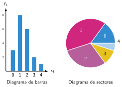

Apartado 13.3
Gráficos estadísticos

Las hojas de cálculo construyen todos estos gráficos a partir de una tabla de datos. Lo importante es elegir el adecuado y comprobar que los ejes y las escalas no distorsionan la información.
13.3.1
Elige el gráfico más adecuado: a) color favorito de la clase; b) estatura de los alumnos; c) evolución del paro mes a mes; d) número de hermanos.